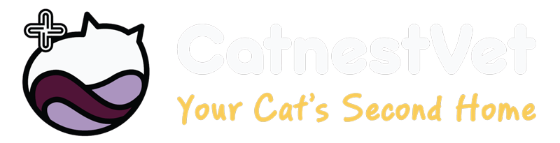
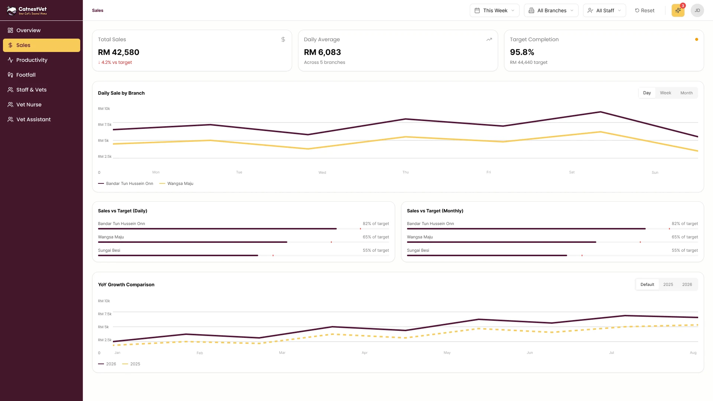
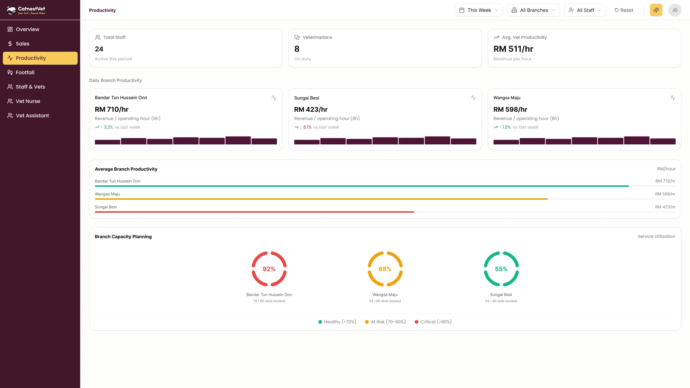
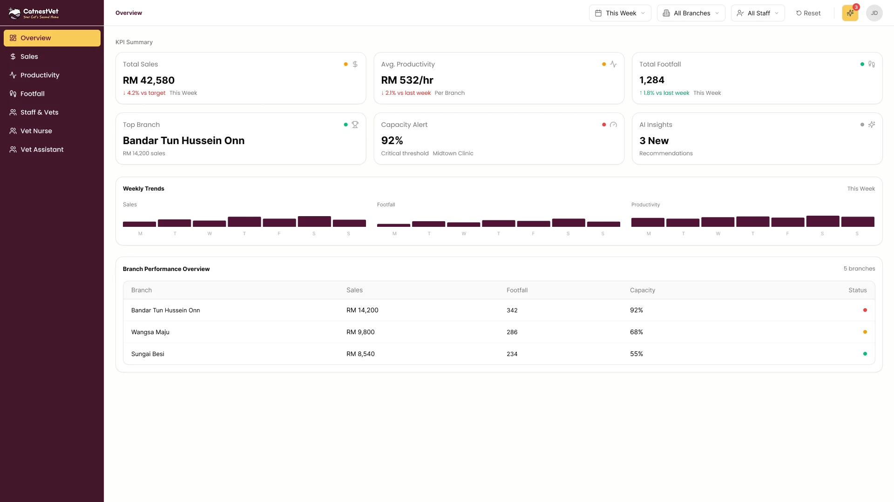
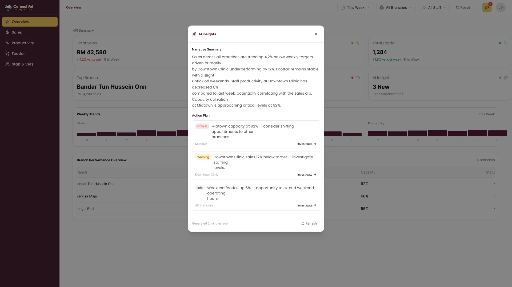
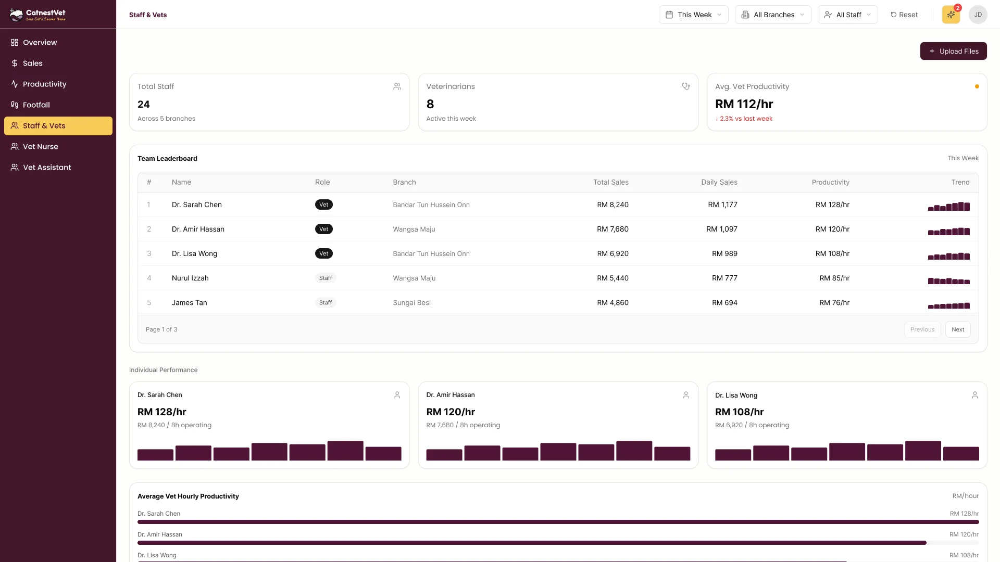
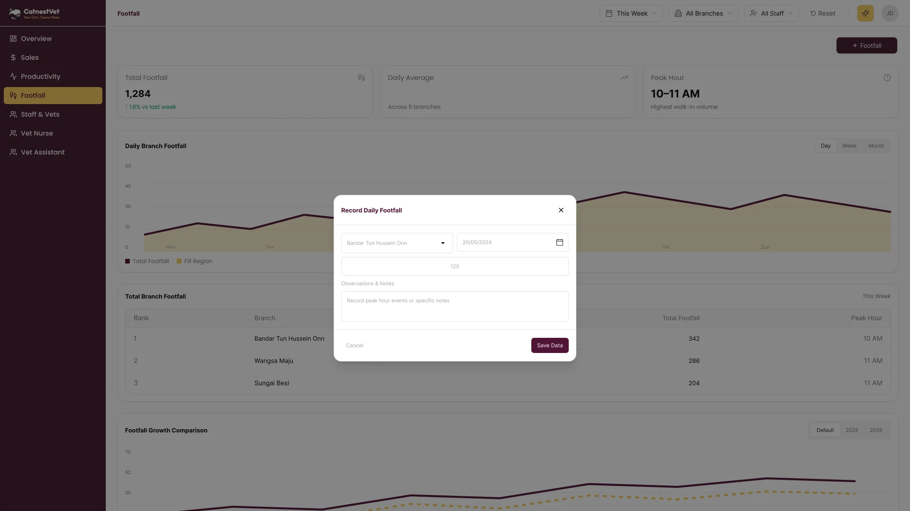
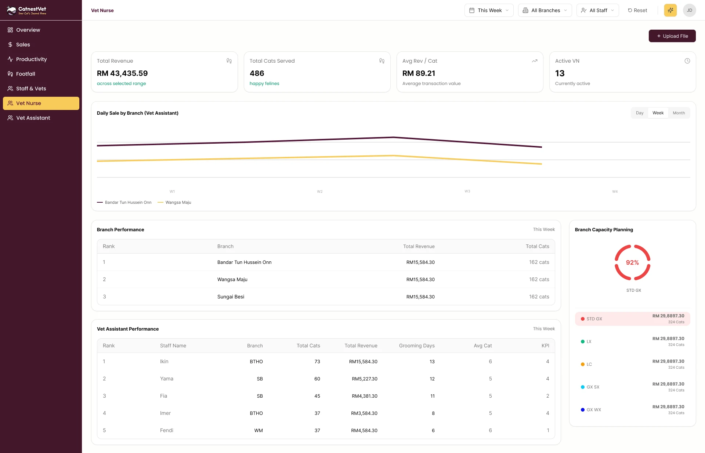

CLINIC MANAGEMENT · 5 BRANCHESA management dashboard for a group of cat clinics. Owners see sales, footfall, productivity and staff performance across every branch, with AI notes on what to look at first.



Five branches, dozens of vets and nurses, and numbers that used to live in separate spreadsheets.
AI insights
One button opens a side panel with a plain-language summary of the week and an action plan. Each item is tagged Critical, Warning or Info and links straight to the branch it's about.

Sales
Daily sales by branch, progress against daily and monthly targets, and a year-on-year line you can switch between 2025 and 2026. Switch the view from day to week to month without reloading the page.
Staff & vets
A leaderboard ranks vets and staff by sales and revenue per hour, with a small trend for each person. Separate views cover vet nurses and vet assistants, and new data comes in by file upload.

How it works
Record the numbers, check the overview, ask what changed, then dig into the branch or person behind it.

Staff log each branch's daily footfall in a quick modal.
KPIs, weekly trends and branch status on one page.
AI insights explain the week and suggest what to check.
Revenue per operating hour and how full each branch is.

Vet nurse and assistant performance, branch by branch.
Overview
Sales, productivity and footfall against target, with the change since last week.
Seven-day bars for sales, footfall and productivity side by side.
Week, branch and staff filters apply to every chart at once.
A green, amber or red dot flags which branch needs attention.
Under the hood
Livewire loads panels like AI insights on demand, and Alpine.js handles the sidebar and modals.
Chart.js graphs with hover tooltips that show the exact value for each branch.
Light or dark mode and the collapsed sidebar are saved, so the dashboard opens the way you left it.